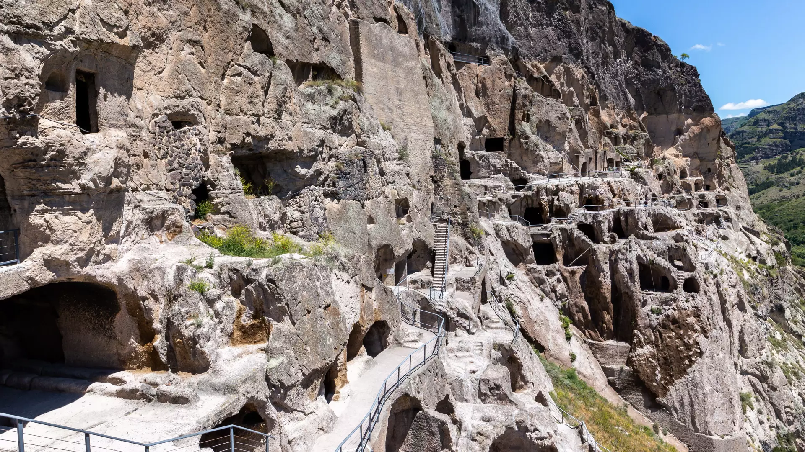

ვარძია
რამდენჯერაც არ უნდა ესტუმრო საქართველოს, ეს ქვეყანა ყოველ ჯერზე თავიდან გაგაოცებს, მოგხიბლავს და დროში მოგზაურობას მოგანდომებს - საუკუნეების წინანდელი განუმეორებელი ძეგლები შენს წინ გადაშლის მთელ ისტორიას და მოგიყვება ამბებს, რომლებსაც სხვაგან ვერსად მოისმენ. სწორედ ერთ-ერთი ასეთი ქმნილებაა ვარძია - შუა საუკუნეების კლდის ხუროთმოძღვრების დიდებული ანსამბლი და ერთ-ერთი ყველაზე პოპულარული ძეგლი საქართველოში.
რეგიონი
სამცხე-ჯავახეთი
ქალაქი
ასპინძა

მარშრუტებში დამატება
სად მდებარეობს ვარძია
ვარძია თბილისიდან 300 კილომეტრის დაშორებით, სამხრეთ საქართველოში, ისტორიულ მესხეთში მდებარეობს, ზღვის დონიდან 1300 მეტრზე. კლდეში ნაკვეთი ქალაქის საერთო ფართობი 40 ათასი კვ.მ-ია.
ვარძიას ეროვნული მნიშვნელობის კულტურის უძრავი ძეგლის სტატუსი აქვს მინიჭებული. დღეს აქ მამათა მონასტერი ფუნქციონირებს.
ვარძიის ისტორია
ის ძირითადად XII საუკუნეში აშენდა და ორი მეფის - გიორგი მესამისა და მისი ასულის, მეფე თამარის მეფობის ხანას უკავშირდება. მაშინ ვარძია ქვეყნის პოლიტიკური, კულტურული და სასულიერო ცხოვრების ცენტრი იყო და საუკუნეების წინათ არსებული ცივილიზაციისა და კულტურის კვალს დღემდე ინახავს.
ვარძიის ნაქალაქარის სტრუქტურა
ვარძია კლდეში ნაკვეთი ციხე-ქალაქია, მისი სიგრძე 900 მეტრია, სიმაღლეში სართულებად არის დაყოფილი, რომლებიც ერთმანეთს გვირაბებით უკავშირდება. ამ კლდოვან ქალაქს 900 წლის წინათ თანამედროვე ქალაქის ინფრასტრუქტურა ჰქონდა, მათ შორის - საკუთარი წყალსადენის სისტემაც.
საუკუნეებმა, გამუდმებულმა ომებმა და მიწისძვრებმა მნიშვნელოვნად დააზიანა ეს უნიკალური ნაგებობა. დღეს 10 სართული და 15 კლდოვანი ეკლესიაა შემორჩენილი. კომპლექსის შუაგულში მთავარი ძეგლია - ფრესკებით მოხატული ღვთისმშობლის მიძინების ტაძარი.
ამასთანავე, აქ შემონახულია 28 მარანი, სადაც 235 ქვევრი იყო განთავსებული. მთლიანად ან ნაწილობრივ გადარჩენილია 242 გამოქვაბული ოთახი.